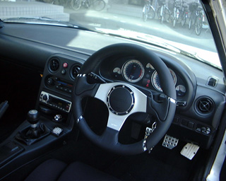
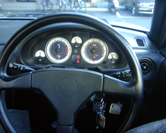
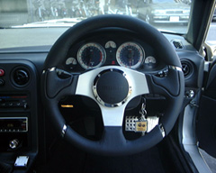

ステアリングを交換しました。momoの Millenium 35 というものです。純正(Vスペ 用？)のものに比べ太く、質感もより良くなりました。なんか、どこかの国のス ポーツカーにこんなステアリングがついていたような..
 |
 |
| 交換前 | 交換後 |


これもまた撮影した距離が違うので大きさが随分違うように見えるかもしれませ んが、実際には φ360mm → φ350mm と、ひとまわりしか小さくなっていません。 (交換前の写真はメーターを撮ろうとしていたときのものなので..) でもフィーリングの方は随分違いました。特に「据え切り」がとても重くなりま した。(パワステがあるのでまだいいけど..) ステアリングの径を小さくするとい うのは、重くなるし、場合によってはメーターの視認性が下がるし、さらに操作 性も落ちるのではないかと思っていましたが、少し重くなった以外は問題ありま せんでした。操作性はむしろ良くなりました。操作性が落ちると思っていたのは、 同じだけタイヤを傾けるために必要なステアリングをきる量が、径が小さくなる と少なくなるため、微妙な操作がやりずらくなると思ったからです。でも実際に は「操作性」(操作のしやすさ)に関しては、タイヤの傾く量の精度よりも、タイ ヤが目標の角度に傾くまでの時間の方が重要だったということでしょうか..
ｂｙ すすたわり